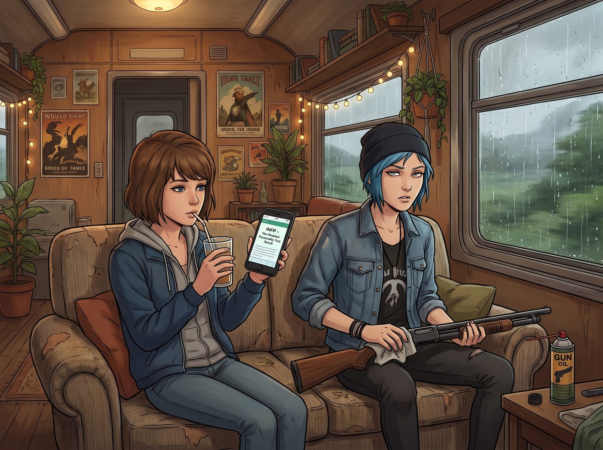

十六型人格的武器庫

二號車廂外依然下著綿綿細雨，而車廂內的氣氛則因為 Max 手機上的一個網頁而變得有些微妙。
「所以，我真的是個INFP，調停者。」Max 盯著螢幕上的測試結果，若有所思地咬著吸管，「這上面說我外表安靜，但內心燃燒著熱情的火焰……聽起來還挺準的。」
正在擦拭霰彈槍的 Chloe 翻了個巨大的白眼，差點把槍油抹到沙發上。
一、企業級占星術
「Max，這玩意兒就是披著科學外衣的星座運勢，是給那些覺得自己太聰明而不屑於看占星術的人準備的賽博安慰劑。」Chloe 嗤之以鼻地冷哼了一聲，「什麼十六型人格？這叫企業級占星術。人類的靈魂怎麼可能被塞進十六個破抽屜裡？」
端著剛出爐的燕麥餅乾走過來的 Kate 輕輕笑了笑：「可是 Chloe，我測出來是ISFJ守衛者。這確實幫助我理解了為什麼我在人多的地方會覺得精力被抽乾，也讓我學會了對自己好一點。我覺得作為一種自我了解的工具，它還是很溫暖的呀。」
「那是因為妳本來就是個天使，Kate。不管那破網站給妳什麼字母，妳都會覺得它在說妳好話。」Chloe 轉過頭，看向正坐在高腳凳上、對著兩台顯示器處理報表的 Lily，「嘿，實習生，妳來評評理。妳這種大腦裡裝著微積分和聯邦稅法的機器人，肯定覺得這玩意兒是毫無實證科學依據的垃圾吧？」
二、二十一世紀的偉大禮物
Lily 停下了敲擊鍵盤的手。她端起手邊的熱牛奶喝了一小口，轉過身，圓框眼鏡在屏幕的光源下閃過一絲冰冷的反光。
「從臨床心理學的嚴謹性來看，這套測驗確實缺乏信效度，被主流心理學界視為偽科學的邊緣產物。」Lily 輕柔地說道。
Chloe 得意地看向 Max：「聽到了吧？科學認證的廢話。」
「但是，」Lily 的話鋒一轉，嘴角勾起一抹乖巧卻令人不寒而慄的微笑，「從行政工程和社會工程的角度來看，它簡直是二十一世紀人類送給我的最偉大禮物。」
車廂裡安靜了一秒鐘。Max 放下了手機，Chloe 擦槍的手也停在了半空。
「什麼意思？」Max 忍不住問道。
Lily 豎起一根蒼白的手指，語氣像是在大學裡講授一門極度危險的選修課：「兩位學姐，妳們覺得十六型人格最大的價值是什麼？是準確嗎？不，它最大的價值在於自願暴露。在過去，如果我想要摸清一個聯邦官員的心理防線，我需要查閱他的消費記錄、婚姻狀況和社群發言，建立複雜的心理側寫。但現在呢？」
Lily 輕輕敲了敲鍵盤，調出一份官員的檔案，上面用紅圈標註了對方社交主頁上的一行小字：INTJ 建築師。
「現在，獵物會主動把自己的使用說明書貼在腦門上。」
三、量身定做的操縱術
Lily 推了推眼鏡，聲音輕柔得彷彿在講述一個童話：「如果我要對付一個把總經理型人格掛在嘴邊的官員，我就會在報告裡堆滿枯燥的數據模型和標準化流程。我會故意在附錄裡留一個微小的格式錯誤讓他挑出來。他會因為糾正了我而感到權威被滿足，然後痛快地在我的撥款申請上簽字。」
「如果對方標榜自己是主人公型人格，我就絕口不提數據。我會用最煽情的詞彙給他講述我們多元藝術營地如何拯救邊緣青少年的靈魂。對方會感動得熱淚盈眶，覺得自己參與了一項偉大的歷史使命，甚至會主動幫我繞過合規審查。」
Chloe 聽得目瞪口呆，連嘴裡的香菸掉到了大腿上都沒察覺。「妳……妳把一個流行心理測驗，變成了心理操縱的武器庫？」
「我只是利用了人類的巴納姆效應與自我實現預言。」Lily 雙手交疊在膝蓋上，宛如一個純潔的修女，「當一個人在自介裡寫下那四個字母時，他就已經在潛意識裡給自己套上了枷鎖。他們不僅相信自己是那種人，他們還會拼命扮演那種人，來維持自己的社交人設。」
四、追溯性的驚悚
Lily 微微歪著頭，看向 Chloe：「比如，那些極度鄙視十六型人格、認為自己不被定義、熱愛打破規則的叛逆者……往往在測驗中會被歸類為某種特定的挑戰者型人格。而這種人，恰恰是整個系統裡最容易被預測的實體。」
Chloe 突然有一種非常不祥的預感。「妳看我幹嘛？我根本沒做過那種弱智測驗。」
「妳當然不需要做，學姐。」Lily 甜美地笑了，「因為對於一個熱愛反抗的靈魂來說，只要我用平靜的語氣對妳說一句：這項任務的難度太高，且違反了幾項聯邦法規，我不認為妳有能力把它搞定……妳就會為了證明我錯了，而冒著大雨去把那台重達四百磅的發電機修好，甚至連工資都不會找我要。」
Chloe 猛地倒抽了一口涼氣。
她想起上週三的那個暴雨之夜。發電機壞了，Lily 就是用一模一樣的語氣、一模一樣的句式對她說了這段話，而她當時冷笑了一聲，拿著扳手在雨裡幹了四個小時，修好後還得意洋洋地嘲笑了 Lily 的書呆子無能。
「妳……妳這個……」Chloe 指著 Lily，手指微微發抖，一時間竟然找不到合適的髒話。
五、溫暖的共鳴
「我是個ISFJ，學姐。這也是我給自己的設定。」Lily 乖巧地眨了眨眼，端起熱牛奶，「溫和、無害、熱愛在幕後為團隊提供行政支援。所以，妳們永遠不用擔心我會對妳們使用黑魔法，對吧？」
Max 默默地把手機螢幕鎖上，將那張INFP的測驗結果徹底關掉，然後不動聲色地往沙發深處縮了縮。
而 Kate 則完全沒聽懂這場暗流湧動的交鋒，她只是開心地把餅乾盤推到 Lily 面前：「Lily，妳說得太深奧啦。不過妳既然也是ISFJ，那我們就是同類了！來，多吃一塊餅乾補充糖分吧。」
「謝謝 Kate 學姐，」Lily 露出了一個全車廂裡最真誠、最無害的笑容，「ISFJ之間的共鳴，確實是世界上最溫暖的事物呢。」